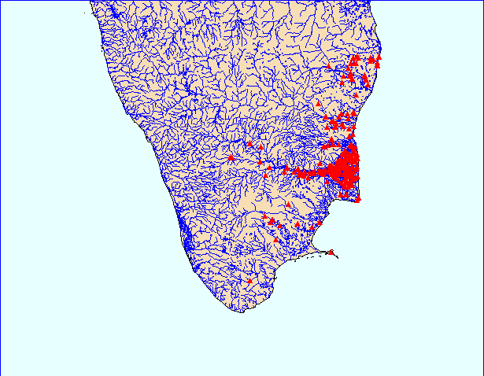

Global Map of The Tēvāram sites

- KVK: Cōḻa Nāṭu: Kāvēri Vaṭa Kari (63 talam)
- KTK: Cōḻa Nāṭu: Kāvēri Teṉ Kari (128 talam)
- IN: Īḻa Nāṭu (2 talam)
- PAN: Pāṇṭi Nāṭu (14 talam)
- MAN: Mali Nāṭu (1 talam)
- KON: Koṅku Nāṭu (7 talam)
- NAN: Naṭu Nāṭu (22 talam)
- TON: Toṇṭi Nāṭu (33 talam)
- TUN: Tuḷuva Nāṭu (1 talam)
- VAN: Vaṭa Nāṭu (5 talam)